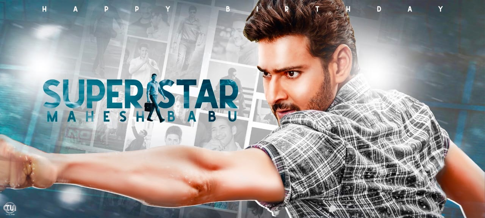

Babu was born on 9 August 1975 in Madras (now Chennai), Tamil Nadu, India.[9] He is the fourth of the five children of Telugu actor Krishna and Indira, after Ghattamaneni Ramesh Babu, Padmavathi and Manjula Swaroop and before Priyadarshini. His childhood was spent mostly in Madras under the care of his maternal grandmother Durgamma and the rest of his family.[10] Since Krishna was busy with his film commitments, Ramesh Babu used to look after Mahesh Babu's academic performance.[9] Along with his siblings, Babu used to play cricket regularly at the VGP Golden beach in Madras. To spend time with him, Krishna used to make sure that his films' shoots would be conducted at the VGP Universal Kingdom during the weekends.[9] Krishna also made sure that none of his children would reveal his name during their schooling to ensure a peaceful environment.[9] He was educated at St. Bede's Anglo Indian Higher Secondary School, Chennai where actor Karthi was his schoolmate.[11][12] Babu in an interview said that actor Vijay and he have been longtime close friends and studied at the same college before establishing themselves in their respective film industries.[13] Babu was an above average student. He obtained a bachelor's degree in commerce from the Loyola College, Chennai.[14] After graduating, he met with director L. Satyanand in Vishakhapatnam for further training in acting which went on for three to four months.[14] Being unable to read and write Telugu, he used to memorise the dialogues given by his directors during the dubbing phase of his films.[15]
At the age of four, Babu visited the sets of the Telugu film Needa (1979) where its director Dasari Narayana Rao shot a few sequences of his as a part of the narrative in the presence of the former's brother Ramesh. Needa marked his debut as a child actor.[16] During the shoot of Poratam (1983) at Vauhini Studios, after watching Babu on the sets, director Kodi Ramakrishna suggested to Krishna that he cast Babu in the role of the protagonist's brother. Initially terrified, Babu agreed to act in the film after being persuaded by the film's crew.[16] He went on to act as a child artist in the films Shankharavam (1987), Bazaar Rowdy (1988), Mugguru Kodukulu (1988) and Gudachari 117 (1989). He played a dual role in the film Koduku Diddina Kapuram (1989). Babu then appeared in Bala Chandrudu (1990), and Anna Thammudu (1990). Later, he continued his college studies.[17] In 1999, Babu made his debut as a lead actor with the film Raja Kumarudu, directed by K. Raghavendra Rao and co-starring Priety Zinta. The film was commercially successful, and people began referring to him with the title Prince.[18] He received the Nandi Award for Best Male Debut.[19] He starred in two films the following year – Yuvaraju and Vamsi. Following their poor performance at the box office, Babu starred in Krishna Vamsi's Murari the next year. He called Murari an important film in his career and the role he played in it one of his favourites.[20][21] Murari was a commercial success and earned him the Nandi Special Jury Award.[19] Though his 2002 releases Takkari Donga and Bobby performed poorly at the box office, Babu received his second Nandi Special Jury Award for his performance in the former.[19] Babu had two film releases in 2003, the first one being Gunasekhar's Okkadu co-starring Bhumika Chawla, which went on to become the highest grossing Telugu film of the year collecting ₹23 crores at the box office.[22] He won his first Filmfare Award for Best Actor – Telugu for his performance in the film.[23] The other release was Teja's Nijam co-starring Rakshita. The film was noted for introducing Dolby EX surround system in Telugu cinema.[24] Though the film was a commercial failure,[25] Babu received praise from the critics for his performance in the film, with Vijayalaxmi of Rediff.com calling him the only reason to watch the film's second half which she termed a routine tale of vendetta.[26] He won his first Nandi Best Actor Award for his performance in the film.[27]
Manjula produced his next film, Naani, directed by S. J. Surya co-starring Amisha Patel. While its simultaneously shot Tamil version New featuring a different cast was commercially successful, Naani flopped at the box office.[20] He received the Nandi Special Jury Award for his performance in his next film, Arjun, directed by Gunasekhar and produced by Ramesh.[28] The failure of Naani depressed both Babu and Manjula, who took a small break in Goa before resuming their other commitments.[29] He chose to act in Trivikram Srinivas's Athadu, co-starring Trisha Krishnan, whose script had been approved back in 2002 before the production of Naani and Arjun had begun.[30] Athadu became one of the highest-grossing films of the year.[31] The film was a commercially profitable venture for the producers and distributors.[32] The film benefited Babu's career as he won the Nandi Best Actor Award for his performance in the role of a hired assassin.[33] Athadu collected a share of ₹25 crores at the box office.[34] Babu collaborated with Puri Jagannadh in 2006 for the film Pokiri, which was jointly produced by Jagannadh and Manjula.[35] Made on a budget of ₹100 million and shot within six months,[36] Pokiri became the highest grossing Telugu film of all time by the end of its run, and was screened at the 7th IIFA Awards held in Dubai.[37] Babu received praise for his performance, with Y. Sunita Chowdary of The Hindu opining that "Mahesh's understated performance in Pokiri allows him effortlessly to reclaim the title of a star, overshadowing more questionable recent career choices".[35] He won the Filmfare Award for Best Actor – Telugu for the second time.[38] Pokiri grossed ₹67 crores at the box office.[39] That same year, his next film, Sainikudu, co-starring Trisha, was released amid huge expectations but flopped at the box office.[40] The following year saw Babu acting in the film Athidhi, co-starring Amrita Rao marking her Telugu debut. The film was produced by Mahesh Babu's's brother Ramesh.[41] UTV Motion Pictures acquired the film's distribution rights for ₹185 million, which became its first Telugu film venture.[42] In 2008, Babu provided voice-over for the film Jalsa directed by Trivikram Srinivas.[43] After Athidhi's release, Babu took a break from films for seven months; two months later, he signed Khaleja, but the break was unintentionally extended for two years due to several delays. During this time, Babu's grandmother and his wife Namrata's parents died. Krishna was worried about Babu's career as the film's shoot was delayed for so long.[44] Upon release, Khaleja received mixed reviews from critics and was a commercial failure in India.[45] However, it managed to perform well at the overseas box office.[46]
In 2011, Babu collaborated with Srinu Vaitla for the film Dookudu, which was inspired in part by the 2003 German tragicomedy film Good Bye, Lenin!.[47] Co-starring Samantha Ruth Prabhu, the film received positive reviews upon release and became one of the highest-grossing films of the year. Dookudu had the largest opening for a Telugu film, and collected a share of ₹101.1 million and a gross of ₹125.8 million on the first day of its release.[48] The Los Angeles Times called Dookudu the "biggest hit you've never heard of".[49] For his performance in the film, Babu won the Best Actor Award at the 2012 Nandi Awards ceremony.[50] He also won the Filmfare Award for Best Actor – Telugu at the 59th Filmfare Awards South and 1st South Indian International Movie Awards ceremonies.[51][52] After the film's gross crossed the ₹1 billion mark, Income Tax Department officials conducted a raid on Babu's Jubilee Hills residence as he was rumored to be getting a remuneration of more than ₹1.2 million for his next projects.[53]. The film collected a distributor share of ₹574 million in its lifetime and grossed more than ₹1 billion in its lifetime.[54]. He later played the role of a mafia kingpin with a hidden personal agenda in the film Businessman, co-starring Kajal Aggarwal and directed by Puri Jagannadh.[55] Upon the film's release, Babu received praise from the critics for his performance in the film, with Y. Sunita Chowdary of The Hindu writing, "The film has no frills, no vulgar wastage and the hero is practically in every frame; you hear only his voice, he looks good, sounds good, he also steals the comedian's job. Mahesh plays it straight.".[56] It grossed approximately ₹187.35 million and collected a share of ₹137.8 million at the global box office on its first day creating an all-time record in terms of opening day collections.[57] Businessman became one of the highest grossing Telugu films of the year.[58] Businessman collected a share of ₹41 crores at the box office.[59] He received a nomination for Filmfare Award for Best Actor – Telugu at both the 60th Filmfare Awards South and the 2nd South Indian International Movie Awards ceremonies.[60][61] By then, Babu was reported to be the second highest-paid actor in South India after Rajinikanth.[62] Babu then began filming for Srikanth Addala's Seethamma Vakitlo Sirimalle Chettu, whose script Babu had approved during the pre-production phase of Dookudu.[63] Co-starring Daggubati Venkatesh along with Anjali and Samantha Ruth Prabhu, Seethamma Vakitlo Sirimalle Chettu became the first Telugu multistarrer film to be produced in the last twenty-five years.[64] Released in January 2013, the film became one of the highest grossing Telugu films of the year and marked the completion of Babu's hat-trick of successful films.[65] He won the Filmfare Award for Best Actor – Telugu at the 61st Filmfare Awards South ceremony and the 3rd South Indian International Movie Awards ceremony.[66][67] He provided voice-over for Srinu Vaitla's Baadshah the same year.[68] Seethamma Vakitlo Sirimalle Chettu collected a distributor share of ₹512 million and was the second-highest-grossing Telugu film of the year.[69]. Babu had two releases in 2014, the first one being Sukumar's 1: Nenokkadine, an action thriller focusing on a celebrity suffering from hallucinations related to the murder of his parents and the discovery of a special variety of rice. Kriti Sanon played the female lead in this film, marking her acting debut.[70] Made on a budget of around ₹70 crores, 1: Nenokkadine was released amid huge expectations, but received mixed reviews from the critics, turning out to be a box office bomb by incurring a loss of around ₹26–27 crores.[71] However, Babu's performance received praise, with critics calling it one of his best performances.[72][73][74] He also earned a nomination for the Best Actor – Telugu at the 4th South Indian International Movie Awards.[75] Grossing over $1.32 million,1: Nenokkadine became the fourth-highest-grossing Telugu film in history at the United States box office at that time.[76] The other release, Aagadu, directed by Srinu Vaitla and co-starring Tamannaah, flopped at the box office,[77] even though it had a gross of ₹60 crores.[78].Karthik Pasupulate of The Times of India gave the film 3 out of 5 stars and called Aagadu "Dookudu 2.0" in operating system parlance. Pasupulate added that it seems more like a remake of Dookudu with a "much louder Mahesh Babu, more banal jokes, and a few superficial twists in the screenplay", and that the end product is "more slapstick than funny".[79].
(Click on the film name for Wikipedia!)
Back to top:Click here
"Aim for Big"
Sai Vikas Pasupuleti 2020 © Copyright